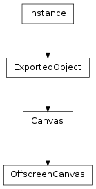
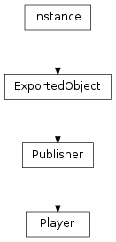

This section describes the classes that provide a framework for rendering. The Player class is an interface to the avg renderer. The Canvas class and its descendant OffscreenCanvas provide areas to draw on.
Bases: libavg.avg.ExportedObject
A Canvas is a tree of nodes. It is the place where a scenegraph is displayed. In a libavg session, there is one main canvas that corresponds to the screen (which is of class Canvas) and zero or more canvases that are rendered offscreen (which are of class OffscreenCanvas).
Returns the element in the canvas’s tree that has the id given.
Returns the image the canvas has last rendered as Bitmap. For the main canvas, this is a real screenshot. For offscreen canvases, this is the image rendered offscreen.
Returns the root of the scenegraph. For the main canvas, this is an AVGNode. For an offscreen canvas, this is a CanvasNode.
Bases: libavg.avg.Canvas
An OffscreenCanvas is a Canvas that is rendered to a texture. It can be referenced in the href attribute of an image node. See https://www.libavg.de/wiki/ProgrammersGuide/OffscreenRendering for an in-depth explanation of using offscreen rendering. Offscreen canvases are created by calling Player.createCanvas(), Player.loadCanvasFile() or Player.loadCanvasString().
Turns autorendering on or off. Default is True.
True if events that arrive at an image node that is displaying this canvas are routed to the offscreen canvas. Read-only.
True if mipmaps are generated and used for the canvas. This is used instead of RasterNode.mipmap for images that render the canvas. Read-only.
Number of samples per pixel to use for multisampling. Setting this to 1 disables multisampling. Read-only.
Returns the id of the canvas. This is the same as calling canvas.getRootNode().getID().
Returns the number of canvases that reference this canvas. Used mainly for unit tests.
Forces an immediate redraw of the offscreen canvas. This makes sure that following calls to screenshot() get a current version of the canvas and is usually used in combination with autorender=False.
True if the machine’s OpenGL implementation supports offscreen multisampling.
Bases: libavg.avg.Publisher
The class used to load and play avg files and the main interface to the avg renderer. Player is a singleton. There is only one instance, accessed by avg.player.
Messages:
To get these messages, call Publisher.subscribe().
- KEY_DOWN(keyEvent)¶
Called whenever a key is pressed.
- KEY_UP(keyEvent)¶
Called whenever a key is released.
- ON_FRAME()¶
Called each frame.
A list of directories where the player searches for plugins when loadPlugin() is called. The separator between path entries is a semicolon (‘;’) under Windows and a colon (‘:’) under Mac and Linux.
Total audio playback volume. 0 is silence, 1 passes media file volume through unchanged. Values higher than 1 can be used to amplify playback. A limiter prevents distortion when the volume is set too high.
Registers an InputDevice with the system.
Returns True if the current OpenGL configuration has full shader support. Platforms without full shader support (this includes OpenGL ES) disable several FXNode types. Calling this when playback is not running is an error.
Tells the system to assume a resolution for the physical screen, overriding operating system information. The parameter is the number of pixels per millimeter as a float. This function affects the values returned by getPhysicalScreenDimensions() and getPixelsPerMM(). It is useful for situations in which the OS cannot know the resolution (e.g. projectors) and when the automatic functions return wrong values (which happens, unfortunately, because of operating system deficiencies).
Executes pyfunc in the main thread of execution, in the next event handling phase. This method is the only libavg method that is thread-safe and can be called from secondary threads of execution. pyfunc can be any python callable, including any libavg methods.
Stops a timeout, an interval or an onFrameHandler from being called. Returns True if there was an interval with the given id, False if not.
| Parameters: | id (int) – An id returned by setInterval(), setTimeout() or setOnFrameHandler(). |
|---|
Creates an empty offscreen canvas. Parameters are given under OffscreenCanvas.
Creates an empty canvas with a render window and an AVGNode as root node. Parameters are given under AVGNode.
Creates a new Node. This node can be used as parameter to DivNode.appendChild() and DivNode.insertChild(). This method will create any type of node, including <div> nodes with children.
| Parameters: | xml – xml string conforming to the avg dtd that specifies the node to create. |
|---|
Creates a new Node. This node can be used as parameter to DivNode.appendChild() and DivNode.insertChild(). This method will only create one node at a time.
| Parameters: |
|
|---|
Removes the canvas given by id from the player’s internal list of canvases. It is an error to delete a canvas that is still referenced by an image node.
Enables or disables checking for errors after each OpenGL call. By default, this is False, since it hurts performance in some setups. It is enabled by the tests. You do not need this method unless you are looking for errors inside libavg.
Enables or disable mouse event handling.
Enables multitouch event handling. Several drivers are available that generate multitouch events. To choose a driver, set the environment variable AVG_MULTITOUCH_DRIVER to the appropriate value:
If AVG_MULTITOUCH_DRIVER is not set, the driver defaults to a plattform-specific one. Under Linux, the default is XINPUT if XInput multitouch is supported on the system, otherwise LINUXMTDEV. Under Windows, the default is WIN7TOUCH.
enableMultitouch() throws an exception if the chosen driver is not available or no multitouch device could be found. (Exception: Since there is no way to determine if a TUIO device is available, enableMultitouch() always appears to succeed in this case.)
Returns the offscreen canvas with the id given.
Must be called inside an event handler and returns the event that’s being processed. Throws an exception if called outside an event handler.
Returns the framerate that the player is actually achieving. The value returned is not averaged and reflects only the current frame.
Returns an element in the main avg tree.
| Parameters: | id – id attribute of the node to return. |
|---|
Returns the last event hook set using setEventHook().
Returns the number of milliseconds that have elapsed since the last frame (i.e. the last display update).
Returns the current target framerate in frames per second. To get the actual framerate that the player is currently achieving, call getEffectiveFramerate().
Returns the number of milliseconds that have elapsed since playback has started. Honors FakeFPS. The time returned stays constant for an entire frame; it is the time of the last display update.
Returns the current modifier keys pressed, or’ed together. For a list of possible values, see KeyEvent.modifiers.
Returns the main canvas. This is the canvas loaded using loadFile() or loadString() and displayed on screen.
Returns the last mouse event generated.
Returns the size of the primary screen in millimeters.
Returns the number of dots per millimeter of the primary display. Assumes square pixels.
Returns the outermost element in the main avg tree.
Returns the size in pixels of the current screen.
Returns a tracker previously created using enableMultitouch() with the internal tracker configured.
Returns the amount of dedicated video memory installed in the system in bytes (which might be zero in case of shared-memory graphics cards). Only available when using NVidia drivers.
Returns the amount of dedicated video memory used in bytes. This is the total amount used by all programs. Only available when using NVidia drivers.
Returns the current hardware video refresh rate in number of refreshes per second.
Returns True if the mouse cursor is visible.
Returns True if the player is running in fullscreen mode.
Returns True if a multitouch device has been configured and is active, False if not. Must be called after play().
Tells the player to keep the playback window open after play() has returned. This makes it possible to reuse the window with another scene and play() call. It is used by the tests to keep flickering to a minimum and increase speed.
Loads the canvas file specified in filename and adds it to the registered offscreen canvases.
Parses avgString, loads the nodes it contains and adds the hierarchy to the registered offscreen canvases.
| Parameters: | avgString (string) – An xml string containing an avg node hierarchy. |
|---|
Loads the avg file specified in filename. Returns the canvas loaded. The canvas is the main canvas displayed onscreen.
Load a Plugin.
| Parameters: | name (string) – filename of the plugin without directory and file extension. |
|---|
Parses avgString and loads the nodes it contains. Returns the canvas loaded. The canvas is the main canvas displayed onscreen.
| Parameters: | avgString (string) – An xml string containing an avg node hierarchy. |
|---|
Opens a playback window or screen and starts playback. play returns when playback has ended.
Returns the contents of the current screen as a bitmap.
Sets the mouse cursor to the bitmap given. The bitmap must have a size divisible by 8 and an RGBA pixel format. The cursor generated is binary black and white with a binary transparency channel. hotspot is the relative position of the actual pointing coordinate in the bitmap.
Set a callable which will receive all events before the standard event handlers receive them. If this callable returns True, the event is not propagated to the standard event handlers.
Generally, setEventHook() should be used as a last resort. In most cases, standard event handlers are a lot cleaner. Also, setting several event hooks is not supported by libavg. To get around this limitation, you can use getEventHook() to chain event hook functions.
Note that event.node is not set in the callback, since the system hasn’t determined the node to send the event to at that point.
Sets a fixed number of virtual frames per second that are used as clock source for video playback, animations and other time-based actions. If a value of -1 is given as parameter, the real clock is used. setFakeFPS() can be used to get reproducible results for recordings or automated tests. Setting FakeFPS has the side-effect of disabling audio.
Sets the desired framerate for playback. Turns off syncronization to the vertical blanking interval.
Sets display gamma. This is a control for overall brightness and contrast that leaves black and white unchanged but adjusts greyscale values. 1.0 is identity, higher values give a brighter image, lower values a darker one.
Sets a python callable object that should be executed regularly. setInterval() returns an id that can be used to call clearInterval() to stop the function from being called. The callback is called at most once per frame.
| Parameters: |
|
|---|
Sets the position of the mouse cursor. Generates a mouse motion event.
Sets the number of samples per pixel to compute. This costs performance and smoothes the edges of polygons. A value of 1 turns multisampling (also knowna as FSAA - Full-Screen Antialiasing) off. Good values are dependent on the graphics driver and the performance of the graphics card.
Determines which OpenGL extensions to check for and use if possible. This method is mainly used for debugging purposes while developing libavg, but can also be used to work around buggy drivers. The values set here override those in the avgrc file. Note that with the exception of multiSampleSamples, fallbacks are always used - if a feature is specified that the system doesn’t support, a less demanding one will be used.
Must be called before play().
| Parameters: |
|
|---|
Sets a python callable object that should be executed once per frame. This is the same as setInterval(0, pyfunc). Returns an id that can be used to call clearInterval() to stop the function from being called.
| Parameters: | pyfunc – Python callable to execute. |
|---|
Sets display engine parameters. Must be called before loadFile() or loadString().
| Parameters: |
|
|---|
Sets a python callable object that should be executed after a set amount of time. setTimeout() returns an id that can be used to call clearInterval() to stop the function from being called.
| Parameters: |
|
|---|
Sets the desired number of monitor refreshes before the next frame is displayed. The resulting framerate is determined by the monitor refresh rate divided by the rate parameter.
| Parameters: | rate (int) – Number of vertical blanking intervals to wait. On Mac OS X, only 1 is supported as rate. |
|---|
hasWindowFrame should be set to True if a non-fullscreen player should have a window frame. If set to False, the player runs with no title bar or window frame. Must be called before play() is called.
Sets the location of the player window. Must be called before loadFile or loadString.
Sets the string displayed in the title bar of the libavg window. Default is ‘libavg’.
Shows or hides the mouse cursor.
| Parameters: | show (bool) – True if the mouse cursor should be visible. |
|---|
Stops playback and resets the video mode if necessary.
Toggles player stop upon escape keystroke. If stop is True (the default), if player will halt playback when Esc is pressed.
Chooses whether to use OpenGL ES or desktop OpenGL for rendering. Must be called before play().
| Parameters: | gles (bool) – True if OpenGL ES should be used. |
|---|
Deprecated since version 1.8: Use avg.player instead.
This method gives access to the player instance. If no player has been created yet, a player is created.